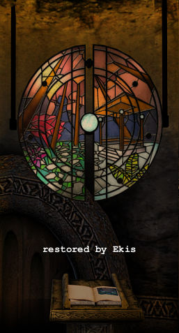
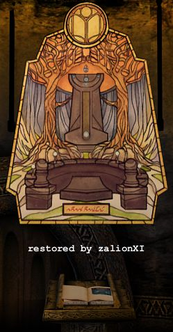
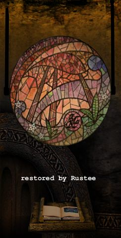
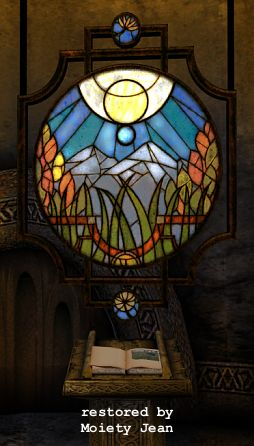
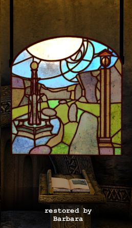
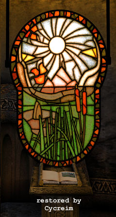
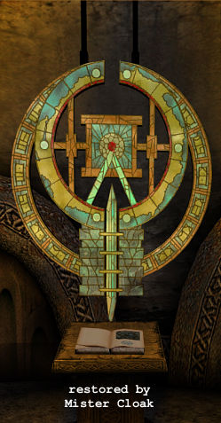
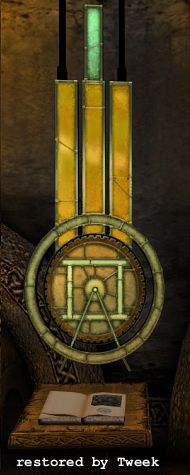
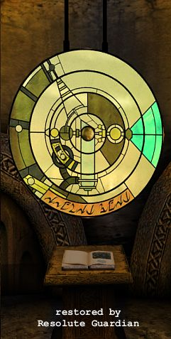

The DRC invited the explorers to restore some stained glass windows. The best restored pieces were displayed in the neighbourhoods.
The explorers are being given a chance to make a contribution to the restoration effort.
The DRC have recently located a few pieces of stained glass artwork depicting [Eder Tsogal / Eder Delin / the Great Zero] and are giving the explorers the opportunity to restore them to their former glory.
If you are interested, please submit your restored designs to info@drcsite.org. Designs will be accepted until Midnight MST on [March 26th / April 23rd / July 21th, 2007]. Your submission is governed by (these terms and conditions)(#). Contest limited to explorers and visitors to the cavern.
Please use the following guidelines:
Image Size - 1024 by 1024, 72 DPI
Include your Explorer Name
Thank you for contributing to the restoration,
The DRC
  
  
  
All Myst, Riven and D’ni images and text © Cyan Worlds, Inc. All rights reserved.
No part may be copied or reproduced without express, written permission of Cyan Worlds, Inc.
Assets used with permission.